SubEquipe_02
O relatório deverá conter a estrutura de focos estabelecida a seguir, bem como versionamentos, metodologia e participantes por foco. Não omitir tópicos.
Focos do Relatório:
FOCO_01: Modelagem Estática
Entrega Mínima: um modelo estático, na notação UML. Mira-se no MM no FOCO, com a entrega mínima.
Participantes no Foco_01
| Nome do Membro | Matrícula |
|---|---|
| Matheus Eiki Kimura | 241025327 |
| Luís Felipe Parreira Cunha | 241011401 |
| André Henrique de Souza Belarmino | 241025149 |
Metodologia do Foco_01
O trabalho foi dividido inicialmente entre os integrantes, que modelaram recortes diferentes do Portal de Notícias. Cada diagrama foi apresentado e discutido em reunião, permitindo comparar classes, atributos, operações e relacionamentos. Em seguida, a equipe unificou os conceitos equivalentes, removeu duplicidades e ajustou as responsabilidades das classes. Como resultado, o modelo consolidado reúne contas, comunidades, postagens, publicações, interações e o processo de análise e moderação em uma única visão do domínio.
Diagrama de Classes
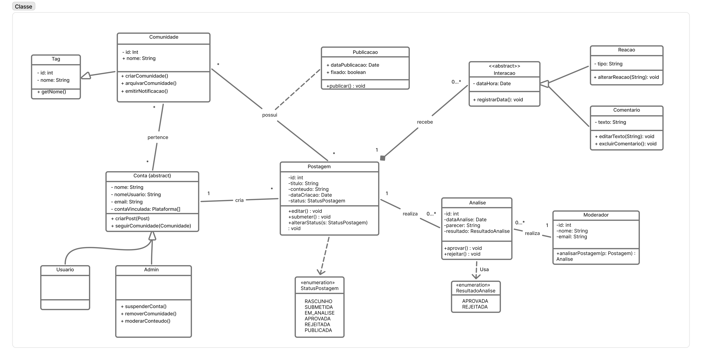
Figura: Diagrama de classes consolidado do Subgrupo 2 (Fonte: SubEquipe 02, 2026)
Analise do Fluxo do diagrama consolidado
Analise do Fluxo do diagrama consolidado
O diagrama consolidado organiza o domínio do Portal de Notícias em torno da classe abstrata Conta, que concentra os dados e comportamentos comuns às contas. Usuario e Admin especializam essa classe, permitindo distinguir as ações de um usuário comum das operações administrativas, como suspender contas, remover comunidades e moderar conteúdo. Uma Conta pode criar várias Postagens. A Postagem representa o conteúdo em elaboração, com título, conteúdo, data de criação e status controlado pela enumeração StatusPostagem. Antes de se tornar pública, ela é submetida à análise de um Moderador. A classe Analise registra a data, o parecer e o resultado da avaliação, representado pela enumeração ResultadoAnalise. Essa separação preserva o histórico de moderação e torna rastreável a decisão tomada sobre cada postagem. Quando o resultado da análise é APROVADA, a postagem pode originar uma Noticia e ser representada como conteúdo público. Em caso de REJEITADA, o fluxo de publicação é interrompido. A Comunidade organiza postagens e pode emitir notificações, enquanto a classe Inscricao registra a participação de uma conta, incluindo data de inscrição, papel e preferência de notificações. O modelo também contempla as interações dos usuários com as publicações. A classe Interacao generaliza as ações realizadas sobre uma publicação, como Reacao e Comentario, permitindo registrar diferentes formas de participação sem misturar seus atributos e comportamentos. Assim, o diagrama relaciona o ciclo de criação, moderação e publicação com os recursos de comunidade e interação social.
Foco 1 - Matheus Eiki Kimura
Diagrama de Classes

Figura: Diagrama de classes - Eiki (Fonte: SubEquipe 02, 2026)
Processo de Construção
Processo de Construção
Antes de desenhar o diagrama, comecei pensando em qual interação do Portal de Notícias realmente merecia ser modelada: não fazia sentido representar o sistema inteiro, então escolhi o fluxo de submissão e moderação de conteúdo, por ser o coração de qualquer plataforma UGC. Para entender melhor como esse tipo de fluxo costuma funcionar na prática, pesquisei brevemente como sites como o Reddit e o dev.to tratam a publicação de conteúdo gerado por usuários: no Reddit, posts passam por filtros automáticos e moderação humana (moderadores de subreddit) antes de ficarem totalmente visíveis; no dev.to, artigos submetidos também passam por uma etapa de revisão editorial/comunitária antes de entrarem em destaque. Essa investigação me ajudou a confirmar que o papel do "moderador" como objeto separado do "sistema" fazia sentido, já que em ambos os casos a decisão de aprovar ou rejeitar não é automática, mas depende de um agente humano com autonomia própria. Também percebi que esses sites tratam a notícia/post publicado como uma entidade distinta da postagem original (rascunho vs. conteúdo publicado), o que me levou a manter postagem e noticia como objetos separados no diagrama, e não como um único objeto que muda de estado. Depois disso, segui o roteiro do enunciado, mas pensando sempre em quem se comunica com quem, evitando cair na tentação de desenhar um diagrama de sequência (que seria mais natural pra mim, já que é o que mais pratiquei em aula) ou um diagrama de classes disfarçado. Por fim, usei as guard conditions para representar a bifurcação aprovado/rejeitado, inspirado justamente na ideia de que, como no Reddit, conteúdo rejeitado simplesmente não segue adiante no fluxo — por isso não existe mensagem para noticia nesse ramo.
Analise do Fluxo do diagrama
Analise do Fluxo do diagrama
O sistema modela o ciclo de vida completo de uma notícia gerada por usuários: da criação da postagem até sua publicação, sempre passando por moderação obrigatória. Usuario e Postagem. Um Usuario é responsável apenas por criar e submeter conteúdo — seus métodos criarPostagem() e submeterPostagem() deixam claro que ele não tem poder de decisão sobre o que é publicado. O resultado da sua ação é uma Postagem, que carrega o conteúdo bruto (titulo, conteudo, dataCriacao) e, principalmente, um atributo status do tipo StatusPostagem (RASCUNHO, SUBMETIDA, EM_ANALISE, APROVADA, REJEITADA, PUBLICADA). É esse atributo — e não uma regra externa — que expressa dentro do próprio objeto que nenhuma publicação é automática. A relação Usuario–Postagem é 1 — 0..*: um usuário pode ter zero, uma ou várias postagens, mas cada postagem tem exatamente um autor. Moderador e Analise. Nenhuma postagem avança sem passar pelo crivo de um Moderador. O resultado dessa avaliação, porém, não é gravado como um simples atributo da postagem — ele vira uma instância própria de Analise, com dataAnalise, parecer e resultado (tipado pela enumeração ResultadoAnalise: APROVADA ou REJEITADA). Essa separação existe porque o domínio exige preservar o histórico de moderação: quem analisou, quando e com qual justificativa, mesmo depois que a postagem já mudou de estado. A relação Postagem–Analise é 1 — 0.., pois uma postagem pode ainda não ter sido analisada (enquanto está em rascunho, por exemplo) ou pode acumular mais de uma análise ao longo do tempo (reenvios, reavaliações). Da mesma forma, Moderador–Analise é 1 — 0..: um moderador realiza várias análises, mas cada análise pertence a um único moderador. De Postagem a Noticia. Só quando uma Analise resulta em aprovação a postagem pode dar origem a uma Noticia — a classe que representa o conteúdo já publicado, com seus próprios atributos (titulo, conteudo, dataPublicacao) e o método publicar(). Aqui está a decisão de modelagem mais importante do diagrama: optou-se por uma associação entre Postagem e Noticia (multiplicidade 1 — 0..1), e não por herança. A razão é conceitual: Postagem e Noticia não são o mesmo objeto em dois momentos, mas dois papéis diferentes — um mutável e sujeito a avaliação, outro estável e público. Se Noticia herdasse de Postagem, o modelo passaria a sugerir que toda postagem é, em potencial, uma notícia, o que conflitaria com o próprio controle feito pelo atributo status. Com a associação, a multiplicidade 0..1 já basta para garantir que uma postagem gera no máximo uma notícia, e só depois de aprovada; uma postagem rejeitada simplesmente nunca preenche esse lado da relação. Isso também preserva o rastro de auditoria da postagem original, que continua existindo mesmo depois de ter originado a notícia publicada. As enumerações StatusPostagem e ResultadoAnalise cumprem o papel de evitar que estados centrais do domínio sejam representados por texto livre, sujeito a inconsistência — apenas valores previstos e válidos podem ocorrer, o que torna explícitas as transições possíveis do processo. Em síntese, o diagrama conta a seguinte história: um Usuario cria e submete uma Postagem; ela aguarda e passa por uma ou mais rodadas de Analise, conduzidas por um Moderador; se aprovada, pode então gerar uma Noticia, tornando-se conteúdo público. Em nenhum ponto do modelo existe um caminho que permita a uma postagem virar notícia sem antes passar pela moderação — o que atende diretamente ao requisito central do sistema: toda notícia publicada carrega, por trás de si, um histórico de análise registrado e rastreável.
Fontes
Fontes
As fontes utilizadas foram os slides passados em sala e disponiveis no aprender, o site oficial da UML e o artigo What Are the Six Types of Relationships in UML Class Diagrams?, utilizado como apoio para a representação das relações entre classes.
Foco 1 - Luís Felipe Parreira Cunha
Diagrama de Classes
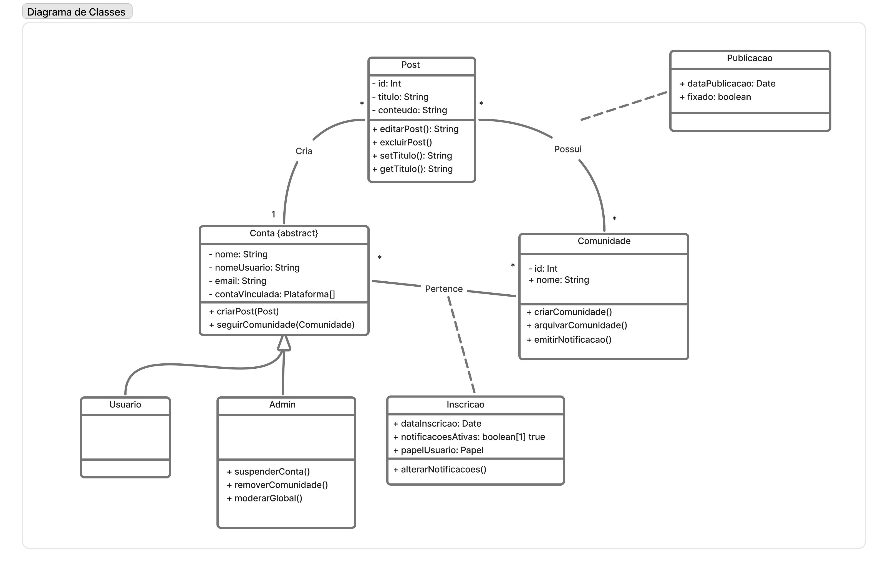
Figura: Diagrama de classes - Luís Felipe Parreira Cunha (Fonte: SubEquipe 02, 2026)
Analise do Fluxo do diagrama
Analise do Fluxo do diagrama
O diagrama modela a organização do Portal de Notícias em torno das contas, das postagens e das comunidades. A classe abstrata Conta concentra os dados e comportamentos comuns aos diferentes tipos de conta, como nome, nome de usuário, e-mail, plataformas vinculadas, criação de posts e acompanhamento de comunidades. A especialização em Usuario e Admin representa a diferença entre uma conta comum e uma conta com responsabilidades administrativas, como suspender contas, remover comunidades e moderar o conteúdo global. A relação entre Conta e Post indica que uma conta pode criar várias postagens, enquanto cada post é criado por uma conta. A classe Post reúne os dados básicos do conteúdo, como identificador, título e conteúdo, além de operações para editar, excluir, alterar e consultar o título. A relação de posse entre Post e Comunidade representa a organização das postagens dentro de comunidades: uma comunidade pode reunir vários posts, e cada post está associado a uma comunidade no contexto representado pelo diagrama. A classe Comunidade representa um espaço de agrupamento e interação sobre um tema. Seus métodos permitem criar e arquivar a comunidade, além de emitir notificações aos participantes. A associação entre Conta e Comunidade é realizada por meio da classe Inscricao, que registra a participação de uma conta em uma comunidade. Essa classe guarda a data de inscrição, o papel do usuário e a preferência sobre notificações ativas, permitindo que cada participante tenha configurações próprias. O método alterarNotificacoes() torna explícita a possibilidade de ajustar essas preferências sem alterar os dados da comunidade. A classe Publicacao representa o conteúdo que foi efetivamente publicado. Sua associação com Post é opcional no fluxo indicado, pois um post pode existir antes de se tornar uma publicação. Os atributos dataPublicacao e fixado registram, respectivamente, quando o conteúdo foi publicado e se ele deve permanecer em destaque. Assim, o modelo diferencia o conteúdo criado e editável do conteúdo que já está disponível publicamente. Em síntese, uma Conta cria Posts e pode participar de Comunidades por meio de Inscricoes. Os administradores possuem operações adicionais para manter a organização e a moderação da plataforma, enquanto as comunidades agrupam posts e gerenciam notificações. Quando um post é publicado, ele passa a ser representado também como uma Publicacao, preservando a distinção entre o conteúdo em elaboração e o conteúdo público.
Processo de Construção
Processo de Construção
Para construir o diagrama, comecei delimitando o escopo nas funcionalidades de comunidade e nas relações entre contas e publicações. A primeira decisão foi criar a classe abstrata Conta para reunir os atributos e comportamentos compartilhados por usuários comuns e administradores, evitando duplicação e deixando explícita a especialização entre esses papéis. Em seguida, modelei Post como a entidade que representa o conteúdo criado por uma conta, com operações de edição, exclusão e alteração do título. Depois, acrescentei Comunidade para representar os espaços que agrupam publicações e permitem a emissão de notificações. A participação de uma conta em uma comunidade foi modelada por uma classe associativa, Inscricao, porque a relação precisa armazenar informações próprias, como data de inscrição, papel do usuário e preferência de notificações. Também separei Post de Publicacao para representar a diferença entre um conteúdo criado ou editável e o conteúdo já publicado, que possui data de publicação e pode ser fixado. Durante a elaboração, utilizei Inteligência Artificial como apoio para discutir nomenclaturas, verificar possibilidades de relacionamento e identificar inconsistências no primeiro rascunho. As sugestões foram revisadas pela equipe e ajustadas ao domínio do Portal de Notícias, especialmente na distinção entre as responsabilidades de Usuario e Admin e na substituição da ideia de moderação global por moderação de conteúdo. Por fim, o modelo foi apresentado na reunião do subgrupo e considerado junto aos diagramas dos demais integrantes para a consolidação do diagrama de classes. Como registro do apoio utilizado na elaboração, consultei o chat sobre o diagrama de classes.
Foco 1 - André Henrique de Souza Belarmino
Diagrama de Classes
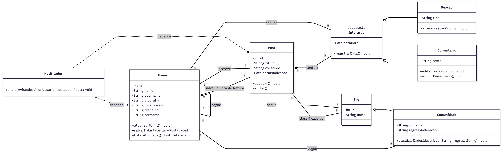
Figura: Diagrama de classes - André Henrique de Souza Belarmino (Fonte: SubEquipe 02, 2026)
Fonte teórica: as regras de visibilidade, multiplicidade, generalização, composição e dependência aplicadas neste diagrama seguem a notação UML apresentada no material de Modelagem Estática da disciplina de Arquitetura e Desenho de Software (Profa. Milene Serrano).
Analise do Fluxo do diagrama
Analise do Fluxo do diagrama
O recorte modela o perfil do usuário do Portal de Notícias com base em uma engenharia reversa das funcionalidades reais do dev.to, cobrindo desde a identidade do usuário até suas interações sociais e de conteúdo. A classe Usuario concentra os atributos de perfil (nome, username, biografia, localizacao, trabalho e corMarca) e expõe as operações atualizarPerfil(), salvarNaListaLeitura(Post) e listarAtividade(), representando as funcionalidades de edição de perfil, lista de leitura e histórico de atividades que a plataforma oferece. A relação Usuario–Post (1 — *) representa a autoria: um usuário escreve vários posts, e cada Post carrega titulo, conteudo e dataPublicacao, além dos métodos publicar() e editar(). Uma segunda associação, também muitos-para-muitos (* — *), liga Usuario a Post com o rótulo "salva na lista de leitura", modelando separadamente a funcionalidade de salvar artigos para ler depois, sem confundi-la com a autoria do conteúdo. A classe Tag foi modelada como superclasse de Comunidade por generalização (herança), pois no domínio real do dev.to uma comunidade nada mais é do que uma tag que recebeu atributos e comportamentos estendidos (corTema, regrasModeracao e o método atualizarDados()). Essa decisão evita duplicar o conceito de "rótulo de conteúdo" em duas classes desconexas e expressa corretamente que "Comunidade é uma Tag", mantendo compatibilidade com a relação Post–Tag ("classificado por") e permitindo que posts sejam filtrados tanto por tags simples quanto por comunidades. O relacionamento reflexivo Usuario "*" -- "*" Usuario ("segue (reflexiva)") modela a mecânica de rede social do dev.to, em que um usuário segue outros usuários. De forma equivalente, Usuario também se associa a Tag pelo rótulo "segue", permitindo que o usuário acompanhe tanto pessoas quanto tópicos/comunidades. A classe abstrata Interacao generaliza Comentario e Reacao, e se relaciona com Post por composição (Post "1" *-- "*" Interacao): como uma interação não tem sentido de existir fora do post ao qual pertence, se o post for excluído, todos os comentários e reações associados também deixam de existir. Por fim, a classe Notificador foi incluída exclusivamente para representar uma relação de dependência (linha tracejada, Notificador ..> Usuario e Notificador ..> Post): ela recebe Usuario e Post apenas como parâmetros de enviarAviso(), sem armazená-los como atributo, o que caracteriza uma dependência de uso e não uma associação persistente.
Processo de Construção
Processo de Construção
O ponto de partida foi delimitar o escopo estritamente ao que o subgrupo já havia levantado como funcionalidades de perfil do usuário (seguir usuários/comunidades/tags, publicar posts, interagir por comentário e reação, listar atividade e lista de leitura), evitando modelar funcionalidades de moderação e administração, já cobertas pelos outros integrantes do subgrupo. Para enriquecer o modelo com fidelidade ao domínio, foi feita uma análise comparativa com a plataforma real dev.to (e sua base open-source Forem), identificando atributos de perfil (localizacao, trabalho, corMarca) e mecânicas próprias da rede, como seguir usuários, tags e comunidades separadamente.
Utilizei Inteligência Artificial generativa como apoio para gerar um primeiro rascunho do diagrama de classes (Versão 1) e discutir as regras de multiplicidade e os tipos de relacionamento previstos na notação UML. Essa primeira versão, no entanto, apresentava um modelo de domínio raso: tratava Comunidade como uma classe isolada e sem herança, não diferenciava a lista de leitura da autoria de posts, deixava classes como Comentario, Reacao e Interacao sem nenhum método (aproximando-se de um "modelo anêmico"), e não continha nenhuma relação de dependência, apesar de esse tipo de relacionamento ser um dos ensinados na disciplina.
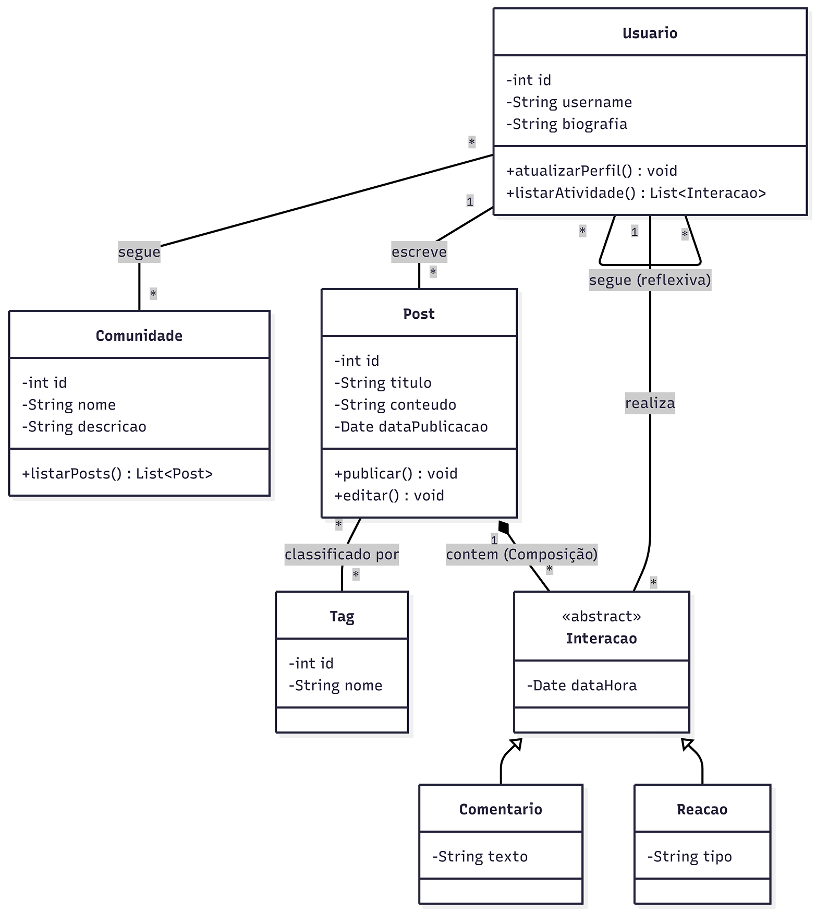
Figura: Diagrama de classes - Versão 1, gerada por IA Generativa, antes das correções (Fonte: André Henrique de Souza Belarmino, 2026)
FOCO_02: Modelagem Dinâmica
Entrega Mínima: um modelo dinâmico, na notação UML. Mira-se no MM no FOCO, com a entrega mínima.
Participantes no Foco_02
| Nome do Membro | Matrícula |
|---|---|
| Luís Felipe Parreira Cunha | 241011401 |
| André Henrique de Souza Belarmino | 241025149 |
| Matheus Eiki Kimura | 241025327 |
Metodologia do Foco_02
O modelo dinâmico foi elaborado a partir dos principais fluxos identificados no diagrama de classes e discutido na reunião do subgrupo. Cada integrante representou as mensagens trocadas entre os objetos de seu recorte funcional. Depois, os fluxos foram comparados para verificar a ordem das operações, as condições de sucesso e falha e a responsabilidade de cada objeto. A consolidação considerou os ajustes definidos pela equipe, mantendo a comunicação entre conta, postagem, comunidade, análise, publicação e serviços de persistência.
Modelo Dinâmico
O modelo dinâmico completo é composto pelos três diagramas de contribuição elaborados pelo subgrupo. Em conjunto, eles mostram a interação com publicações, a atualização do perfil e das atividades do usuário e o acompanhamento de comunidades.
Diagrama de Comunicação - Publicação de Postagem
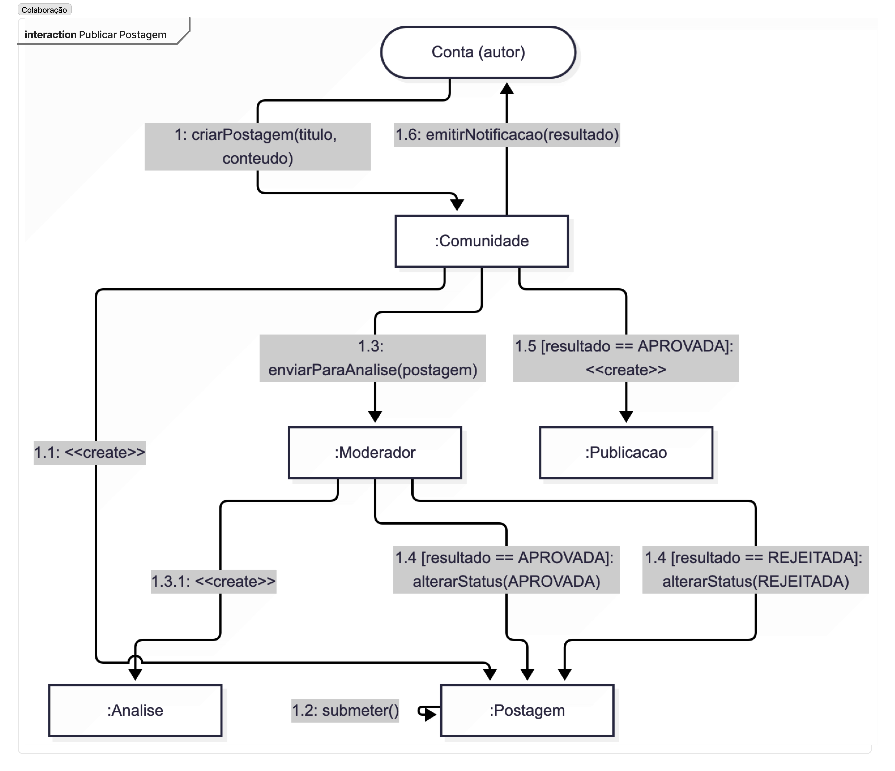
Figura: Diagrama de comunicação de publicação de postagem (Fonte: SubEquipe 02, 2026)
Diagrama de Comunicação - Perfil e Atividades
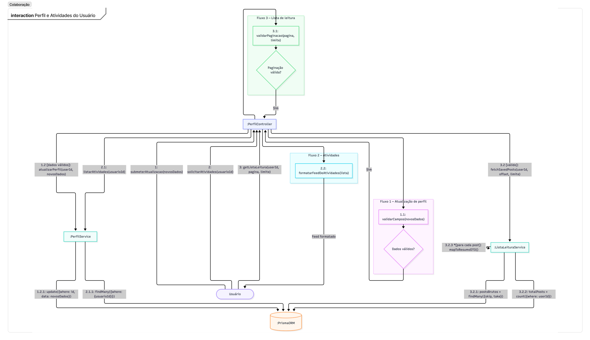
Figura: Diagrama de comunicação de perfil e atividades do usuário (Fonte: SubEquipe 02, 2026)
Diagrama de Comunicação - Seguir Comunidade
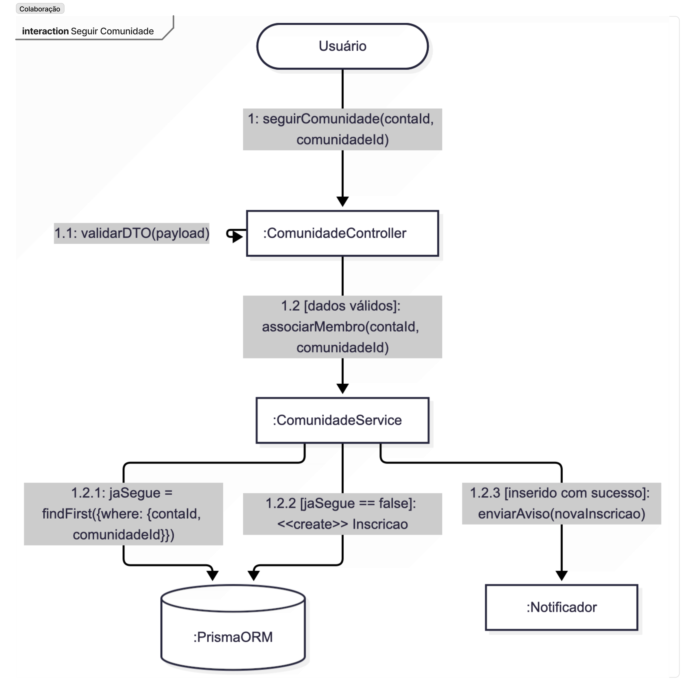
Figura: Diagrama de comunicação de seguir comunidade (Fonte: SubEquipe 02, 2026)
Analise dos Fluxos do subgrupo
Analise dos Fluxos do subgrupo
O conjunto de três diagramas dinâmicos descreve comportamentos complementares do Portal de Notícias. No fluxo de publicação de postagem, a Conta autora cria a Postagem e, após sua aprovação, a Publicacao pode ser criada e associada à Comunidade. A comunidade recebe a notificação do novo conteúdo, conectando a publicação ao espaço em que ela será acompanhada pelos participantes. O fluxo de perfil e atividades mostra a atualização dos dados do usuário, a consulta de postagens salvas e a listagem de atividades. O PerfilController valida os dados antes de solicitar a atualização e consulta os serviços responsáveis por recuperar e formatar os resultados. Quando os dados são inválidos, o processo é interrompido; quando são válidos, a alteração é persistida. No fluxo de seguir comunidade, o Usuario solicita a inscrição e o ComunidadeController valida a requisição. Se a conta já acompanha a comunidade, o sistema consulta a inscrição existente; caso contrário, cria uma nova Inscricao e registra a participação. Quando a inserção é concluída, um aviso pode ser enviado pelo Notificador. Em conjunto, os diagramas mostram mensagens, condições, retornos e responsabilidades distribuídas entre usuários, controladores, serviços e persistência.
Fontes e comprobatórios do Foco_02
Fontes e comprobatórios do Foco_02
As fontes utilizadas foram os slides de Modelagem Dinâmica da disciplina, a documentação oficial da UML sobre Communication Diagrams e o material do subgrupo sobre a consolidação dos fluxos do Portal de Notícias. Também foi consultado o próprio diagrama de classes consolidado para manter coerência entre os cenários dinâmicos e as classes do domínio. Como registros do apoio utilizado na elaboração e na consolidação do fluxo, consultamos o chat sobre o diagrama de comunicação e a união dos diagramas do subgrupo e o diagrama consolidado no Mermaid. Comprobatórios do chat do Mermaid: as capturas abaixo registram a solicitação de organização dos fluxos e o resultado apresentado no diagrama consolidado:
Figura: Solicitação de organização dos fluxos no Mermaid (Fonte: SubEquipe 02, 2026)

Figura: Resultado da organização dos fluxos no Mermaid (Fonte: SubEquipe 02, 2026)

Foco 2 - Luís Felipe Parreira Cunha
Modelo Dinâmico
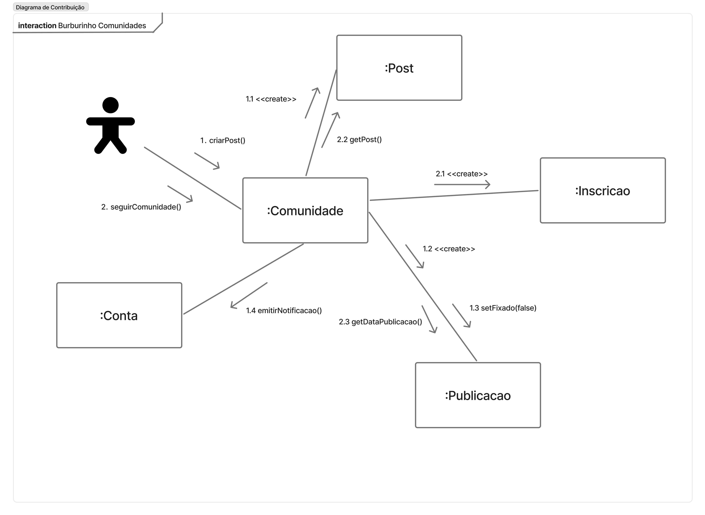
Figura: Diagrama de comunicação - Luís Felipe Parreira Cunha (Fonte: SubEquipe 02, 2026)
Processo de Construção
Processo de Construção
Para esse diagrama, foquei no fluxo de participação em comunidades e na publicação de conteúdo, que são os principais comportamentos sociais do Portal de Notícias. Comecei delimitando as classes envolvidas — Conta, Comunidade, Inscricao, Postagem e Publicacao — e pensando como as mensagens seriam trocadas entre elas de forma coerente com o domínio. A ideia central foi mostrar o caminho da criação do conteúdo até sua visualização na comunidade, sem perder a relação entre a ação do usuário e a validação do sistema. Em seguida, organizei a sequência de mensagens para refletir a experiência real do usuário: ele cria uma postagem ou solicita a inscrição em uma comunidade, o sistema valida a ação e, em seguida, a comunidade ou a publicação passa a existir como parte do estado do portal. Mantive a ordem das operações enfatizando o papel dos objetos de domínio e a responsabilidade do controlador na decisão de aceitar ou rejeitar a ação. Além disso, o modelo foi ajustado para manter consistência com o diagrama de classes consolidado, evitando duplicações e garantindo que as interações entre conta, comunidade e publicação aparecessem como relações de domínio, e não como detalhes de implementação técnica.
Analise do Fluxo do diagrama
Analise do Fluxo do diagrama
O fluxo se inicia com a Conta solicitando uma ação relevante para o portal, como a criação de uma postagem ou a inscrição em uma comunidade. Em seguida, o sistema valida a solicitação e cria ou associa o objeto correspondente, preservando a regra de negócio que define o comportamento esperado em cada caso. A validação aparece como etapa essencial, porque evita duplicidades e garante que a participação do usuário siga as regras do domínio antes de qualquer persistência ou publicação. Essa decisão torna o diagrama mais fiel ao problema real: o sistema não apenas registra ações, mas também organiza e controla a relação entre usuários, comunidades e conteúdo. Em conjunto, o diagrama mostra como a interação entre usuário, comunidade e publicação sustenta a dinâmica do portal, com a responsabilidade distribuída entre objetos de domínio, controladores e a lógica de negócio do sistema.
Foco 2 - Matheus Eiki Kimura
Diagrama de Comunicação

Figura: Diagrama de comunicação - Eiki (Fonte: SubEquipe 02, 2026)
Processo de Construção
Processo de Construção
Ao pensar na modelagem desse diagrama, comecei revisando como outras plataformas de conteúdo gerado por usuários lidam com o ciclo de vida de uma publicação. Olhei o Reddit, onde qualquer post entra no ar quase instantaneamente e a curadoria acontece depois, via upvotes e moderação comunitária reativa — um modelo que não fazia sentido aqui, já que o planejado pelo grupo exige aprovação prévia. O dev.to me pareceu uma referência mais próxima: lá o conteúdo também passa por triagem antes de ganhar destaque, embora a publicação em si já ocorra de forma mais aberta. Isso me ajudou a decidir que o núcleo do domínio giraria em torno de um status controlado (StatusPostagem), em vez de um simples booleano "publicado/não publicado", já que o processo tem etapas intermediárias reais. Pensei bastante também em separar Postagem de Noticia: notei que em fóruns como o Reddit o post e sua versão "aprovada" são o mesmo objeto, mas aqui, como existe moderação formal, fazia mais sentido tratar como papéis distintos, preservando histórico. A ideia da classe Analise surgiu justamente da necessidade de rastreabilidade, algo que vi discutido em sistemas editoriais tradicionais (tipo fluxos de revisão de artigos científicos), não tanto em UGC puro. No fim, tentei equilibrar simplicidade de domínio com fidelidade ao processo real de moderação.
Analise do Fluxo do diagrama
Analise do Fluxo do diagrama
A leitura segue estritamente a numeração, não a posição vertical dos elementos: 1 – 2.1: usuario solicita a criação de uma postagem; sistema exibe o formulário (1.1); usuario submete título e conteúdo (2); sistema registra a postagem criando o objeto postagem (2.1). 3 – 5: sistema encaminha a postagem para análise (3); moderador consulta as pendências (4) e realiza a análise sobre o objeto analise (5). 6: moderador decide, respeitando as guard conditions [resultado == APROVADA] ou [resultado == REJEITADA] — apenas uma das duas mensagens ocorre por execução. 7: sistema registra o resultado da análise (auto-mensagem). 8 (fluxo de aprovação): sistema publica a notícia (auto-mensagem), cria o objeto noticia (8.1) e o próprio objeto noticia se publica (8.2 — auto-mensagem). 8 (fluxo de rejeição): sistema apenas informa a rejeição (auto-mensagem) — note que, neste ramo, nenhuma mensagem para noticia é enviada, deixando explícito que conteúdo rejeitado não é publicado. 9: sistema notifica o usuario sobre o resultado final, em ambos os fluxos. Relação com o Portal de Notícias UGC O diagrama modela o caminho crítico do conteúdo gerado pelo usuário (UGC) dentro do portal: da criação pelo usuario, passando pelo controle de qualidade exercido pelo moderador, até a eventual publicação como noticia. Ele evidencia que a atualidade do portal depende diretamente desse fluxo de moderação — só o conteúdo aprovado alimenta a seção de notícias — e que cada etapa (criação, encaminhamento, análise, decisão, registro e publicação) é uma comunicação distinta e ordenada entre instâncias, sem qualquer suposição sobre implementação técnica (HTTP, banco de dados, etc.), mantendo o diagrama no nível de domínio, como convém a um Diagrama de Comunicação UML.
Fontes
Fontes
As fontes utilizadas por Matheus Eiki foram os slides passados em sala e disponíveis no aprender e o artigo Communication Diagrams, do site oficial da UML.
Foco 2 - André Henrique de Souza Belarmino
Modelo Dinâmico
O recorte dinâmico detalha, por meio de quatro Diagramas de Comunicação, os quatro comportamentos do perfil do usuário já mapeados no diagrama de classes individual: atualizar perfil, atualizar lista de leitura, listar atividades e seguir comunidade. Cada diagrama segue estritamente a notação de Lifelines (objetos instanciados, identificados pelo prefixo ":") ligadas por Links, com as mensagens numeradas por Sequence Expression (1, 1.1, 1.2, ...) indicando a ordem de execução, incluindo guard conditions entre colchetes para representar decisões lógicas.
Fonte teórica: a notação de Lifelines, Links e Sequence Expression utilizada nos quatro diagramas segue a documentação oficial da UML 2.5 sobre Communication Diagrams, disponível em uml-diagrams.org, cruzada com o material de Modelagem Dinâmica da disciplina.
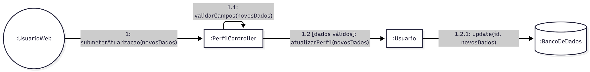
Figura: Diagrama de comunicação - Atualizar Perfil (Fonte: André Henrique de Souza Belarmino, 2026)
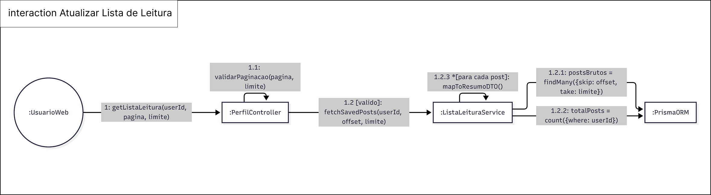
Figura: Diagrama de comunicação - Atualizar Lista de Leitura (Fonte: André Henrique de Souza Belarmino, 2026)
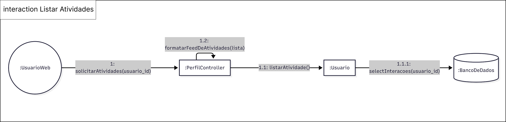
Figura: Diagrama de comunicação - Listar Atividades (Fonte: André Henrique de Souza Belarmino, 2026)
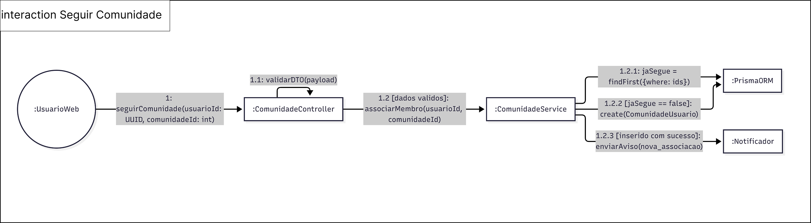
Figura: Diagrama de comunicação - Seguir Comunidade (Fonte: André Henrique de Souza Belarmino, 2026)
Analise do Fluxo do modelo
Analise do Fluxo do modelo
Atualizar Perfil. O ator :UsuarioWeb dispara a mensagem 1: submeterAtualizacao(novosDados) para :PerfilController, que primeiro executa a mensagem reflexiva 1.1: validarCampos(novosDados) sobre si mesmo — uma auto-chamada (self-link) que representa uma validação interna antes de prosseguir. Somente 1.2 [dados válidos]: o controller invoca atualizarPerfil(novosDados) sobre o objeto :Usuario, que por sua vez executa 1.2.1: update(id, novosDados) em :BancoDeDados. A guard condition deixa explícito que dados inválidos interrompem o fluxo antes de qualquer persistência. Atualizar Lista de Leitura. O fluxo começa com 1: getListaLeitura(userId, pagina, limite) de :UsuarioWeb para :PerfilController, que valida a paginação reflexivamente (1.1: validarPaginacao(pagina, limite)) antes de, 1.2 [valido], delegar a busca a :ListaLeituraService via fetchSavedPosts(userId, offset, limite). O serviço dispara duas mensagens paralelas ao ORM — 1.2.1: postsBrutos = findMany({skip: offset, take: limite}) e 1.2.2: totalPosts = count({where: userId}) — e por fim executa 1.2.3 *[para cada post]: mapToResumoDTO() sobre si mesmo, uma iteração (marcada pelo asterisco antes da guard) que converte cada registro bruto em um DTO de resumo antes de devolver a resposta paginada. Listar Atividades. :UsuarioWeb envia 1: solicitarAtividades(usuario_id) a :PerfilController, que delega a :Usuario a mensagem 1.1: listarAtividade() — o mesmo método público definido no diagrama de classes estático (+listarAtividade(): List\<Interacao>). O objeto :Usuario por sua vez consulta :BancoDeDados com 1.1.1: selectInteracoes(usuario_id), e o controller finaliza formatando o resultado reflexivamente com 1.2: formatarFeedDeAtividades(lista). Seguir Comunidade. :UsuarioWeb solicita 1: seguirComunidade(usuarioId: UUID, comunidadeId: int) a :ComunidadeController, que valida o payload reflexivamente (1.1: validarDTO(payload)) e, 1.2 [dados validos], delega a :ComunidadeService a mensagem associarMembro(usuarioId, comunidadeId). O serviço então consulta se o vínculo já existe (1.2.1: jaSegue = findFirst({where: ids}) em :PrismaORM); apenas 1.2.2 [jaSegue == false] ele cria o registro (create(ComunidadeUsuario)); e, 1.2.3 [inserido com sucesso], dispara enviarAviso(nova_associacao) para :Notificador — a mesma classe de dependência criada no diagrama estático, aqui finalmente instanciada e acionada dentro do fluxo dinâmico. Em conjunto, os quatro diagramas mostram a mesma classe Usuario e o mesmo controller de perfil sendo reaproveitados em cenários distintos, e evidenciam que toda escrita no domínio (atualização de perfil, associação a uma comunidade) passa por uma etapa de validação antes de tocar a camada de persistência — reforçando, no nível dinâmico, a mesma preocupação de integridade já expressa pelas multiplicidades e pela composição no diagrama de classes estático.
Processo de Construção
Processo de Construção
Para o modelo dinâmico, escolhi mapear exatamente as quatro operações públicas que eu já havia atribuído a Usuario e às classes relacionadas no meu diagrama de classes (atualizarPerfil(), salvarNaListaLeitura(Post) — representada aqui pelo cenário de consulta Atualizar Lista de Leitura — e listarAtividade()), acrescentando o cenário de Seguir Comunidade por ser a principal funcionalidade social do perfil que ainda não tinha um fluxo dinâmico associado. Essa escolha manteve a rastreabilidade entre o modelo estático e o dinâmico: cada mensagem enviada em um diagrama de comunicação corresponde a um método já especificado (com sua assinatura) na classe correspondente. Diferente do diagrama de classes, aqui usei a Inteligência Artificial generativa já em uma etapa mais madura: pedi que os fluxos seguissem estritamente a fonte teórica do uml-diagrams.org sobre Communication Diagrams (Lifelines, Links e Sequence Expressions com guardas), em vez de aceitar a primeira sugestão gerada. Precisei corrigir manualmente a numeração de algumas mensagens para garantir o aninhamento correto (por exemplo, subordinar 1.2.1 e 1.2.2 a 1.2, e não deixá-las soltas como mensagens de nível 1) e revisar as guard conditions para que representassem exatamente as decisões de negócio discutidas com o subgrupo (dados válidos/invalidos, já segue/não segue, inserção com sucesso). Optei também por incluir explicitamente o :PrismaORM e o :BancoDeDados como lifelines separadas do serviço de negócio, e não como um detalhe implícito, para deixar visível a fronteira entre a camada de aplicação e a camada de persistência em cada cenário. Por fim, os quatro diagramas foram revisados na reunião do subgrupo, verificando a coerência dos nomes de mensagens com os métodos já definidos no diagrama de classes consolidado.
FOCO_03: IA Generativa
Entrega Mínima: pontos de vista de cada membro da equipe sobre as lições aprendidas e uso da IA Generativa. TODOS DEVEM PARTICIPAR!
Participantes no Foco_03
| Nome do Membro | Lições Aprendidas | Uso da IA Generativa (SENSO CRÍTICO) |
|---|---|---|
| Luís Felipe Parreira Cunha | Aprendi a relacionar a modelagem estática com a dinâmica, entendendo que as classes, responsabilidades e associações definidas no diagrama de classes precisam aparecer como mensagens coerentes nos fluxos de comunicação. Também compreendi melhor o uso de classes associativas, como Inscricao, para representar informações próprias de uma relação. | A IA Generativa foi útil para gerar um primeiro esboço dos relacionamentos, sugerir nomes de operações e ajudar a organizar os fluxos de publicação, moderação e participação em comunidades. Porém, as respostas apresentaram ambiguidades e precisaram ser revisadas, principalmente quanto às responsabilidades de Conta, Admin, Comunidade e Analise. A equipe comparou as sugestões com os requisitos do sistema e manteve apenas as decisões compatíveis com o domínio e com a notação UML. |
| André Henrique de Souza Belarmino | Aprendi a diferenciar com rigor os tipos de relacionamento estrutural da UML (generalização, composição, associação e dependência) e a identificar quando um modelo está caindo em um "domínio anêmico", isto é, quando uma classe acumula atributos sem nenhum comportamento associado. Também entendi que decisões de modelagem, como tratar Comunidade como uma especialização de Tag, precisam refletir o domínio real da aplicação e não apenas uma estrutura de dados genérica, e que manter a correspondência entre os métodos do diagrama de classes e as mensagens do diagrama de comunicação é o que garante rastreabilidade entre os modelos estático e dinâmico. | A primeira versão do diagrama de classes foi gerada por Inteligência Artificial para estabelecer a base estrutural, mas precisei realizar diversas intervenções e correções manuais na Versão 2 para alinhar o modelo estritamente ao escopo do nosso projeto. Entre as principais alterações, corrigi a modelagem para que Comunidade utilizasse herança em relação a Tag, expandi a classe Usuario com atributos mais fiéis ao domínio, e mapeei a nova relação de "lista de leitura", separando-a da relação de autoria de posts. Além disso, adicionei métodos operacionais nas classes Comentario, Reacao e Interacao, que a IA havia deixado sem nenhum comportamento, e criei a classe Notificador especificamente para demonstrar a relação de dependência (linha tracejada), que estava ausente na proposta original da IA. Esse processo reforçou, na prática, que a IA Generativa é um bom ponto de partida estrutural, mas não substitui a validação crítica e o conhecimento teórico da notação UML — sem eles, simplificações e omissões do modelo gerado passariam despercebidas. |
| Matheus Eiki Kimura | Trabalhar com o diagrama de classes e o de comunicação lado a lado deixou claro como visões estática e dinâmica se completam: o primeiro define quem são Postagem, Analise, Noticia e como se relacionam; o segundo mostrou a ordem exata das mensagens — como enviarParaAnalise(), registrarAnalise() e criarNoticia() — que dão vida a essas relações. Ver a guard condition [resultado == APROVADA] no diagrama de comunicação confirmou, na prática, a mesma regra que eu já tinha modelado como multiplicidade 0..1 entre Postagem e Noticia: nos dois casos, o fluxo de rejeição simplesmente não gera o objeto noticia. Pesquisar Reddit e dev.to antes de desenhar também reforçou, sob outro ângulo, a decisão de manter postagem e noticia separadas — percebi que ambos os sites tratam rascunho e conteúdo publicado como coisas distintas, não o mesmo objeto mudando de estado. No fim, entendi que um diagrama sozinho corre o risco de parecer arbitrário, mas quando estrutura e comportamento se confirmam mutuamente, a modelagem fica muito mais sólida e defensável. | No DIAGRAMA DE CLASSES a ia Criou corretamente as classes necessárias e conseguiu interligalas de maneira satisfátoria, porem repetiu caixas que já haviam sido criadas corretamente (Gerou duplicatas) e gerou também um diagrama de estados (acredito que tenha sido uma alucinação), ademais ela não usou notações como “- # +” para representar se os metodos são privados, publicos ou protegidos, percebendo esses erros eu corrigi-los. No DIAGRAMA DE COMUNICAÇÃO a IA generativa em primeira instância alucinou ao pedir por um diagrama de “colaboração”, porém ao utilizar o termo “comunicação” e passar fontes para que ela se basea-se (link da documentação oficical do UML-Diagrams e Slides da Aula) obteve maior sucesso, percebi que ela enfeitou de mais (colocou muitos icones) o que na minha opinião atrapalhou a vizualição e deixou menos profissional, porém de conteudo ficou satisfatório, ajustei a questão de icones para deixar ma [truncated] |
Versionamentos
| Nome do Membro | Contribuição | Data |
|---|---|---|
| Luís Felipe Parreira Cunha | 1. Elaboração do Diagrama de Classes; 2. Elaboração do Diagrama de Comunicação; 3. Descrição da metodologia dos focos; 4. Ponto de vista sobre as lições aprendidas e o uso da IA Generativa | 17/09/2026 |
| André Henrique de Souza Belarmino | 1. Elaboração do Diagrama de Classes (perfil do usuário); 2. Elaboração de 4 Diagramas de Comunicação (Atualizar Perfil, Atualizar Lista de Leitura, Listar Atividades e Seguir Comunidade); 3. Ponto de vista sobre as lições aprendidas e o uso da IA Generativa | 17/09/2026 |
| Matheus Eiki Kimura | Adição da contribuição Individual | 17/09/2026 |